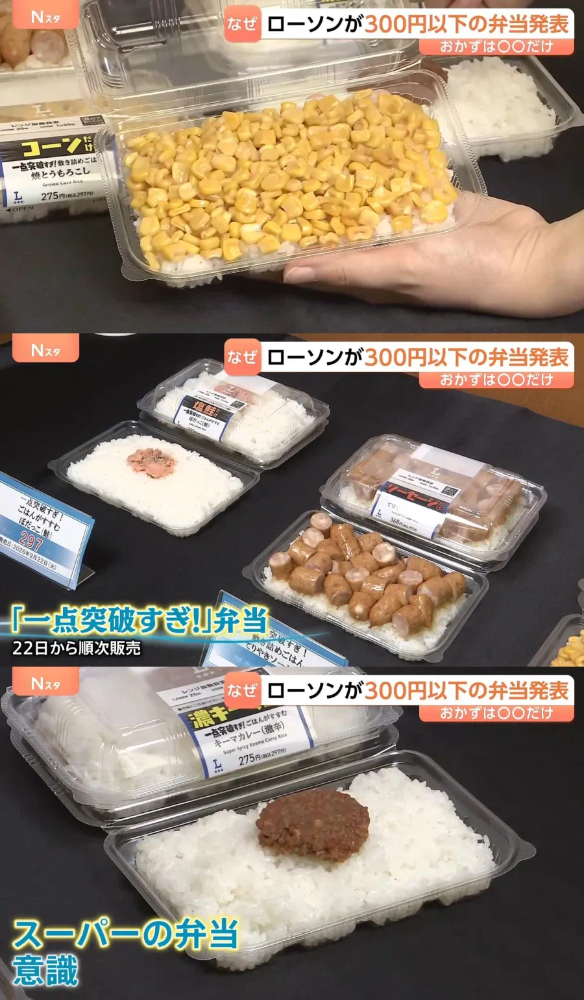
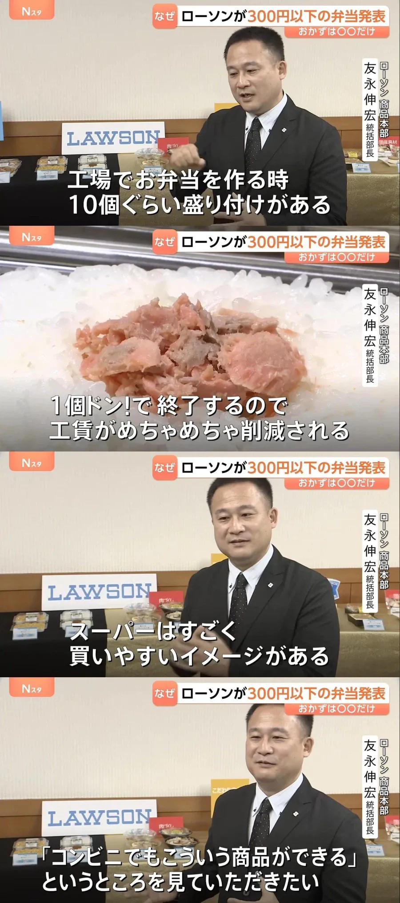
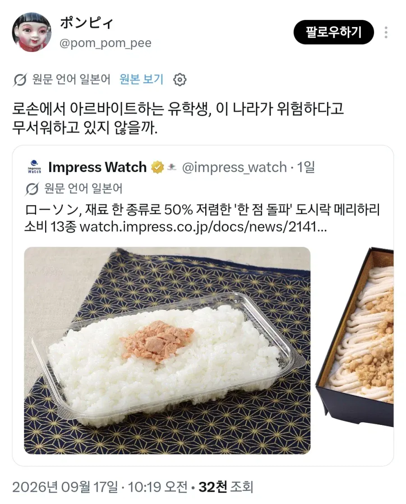
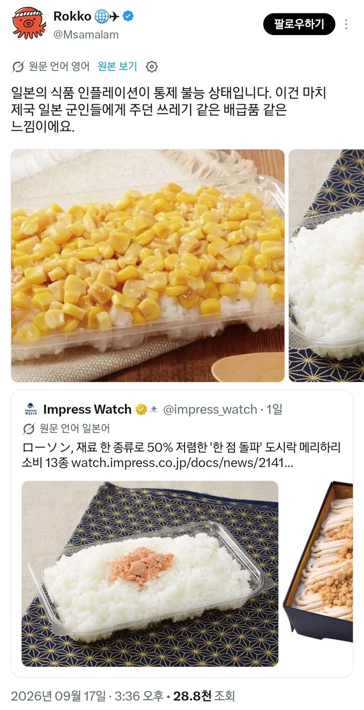
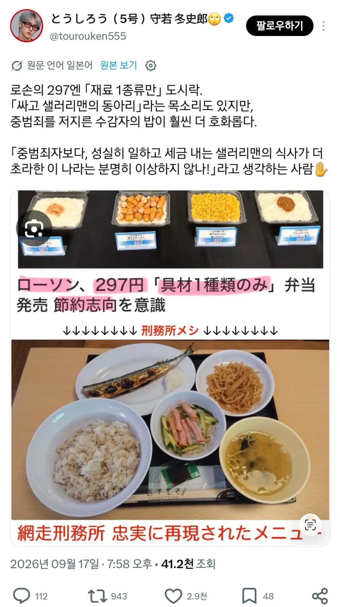
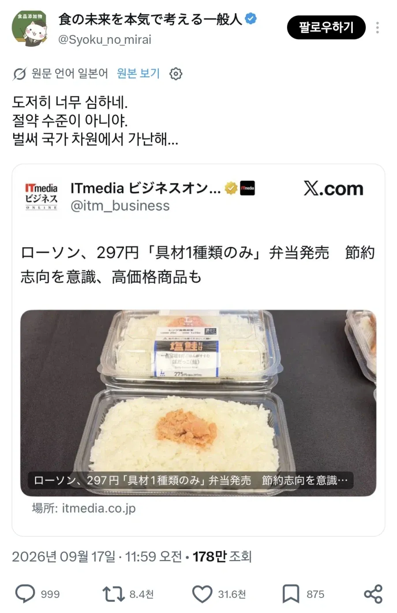
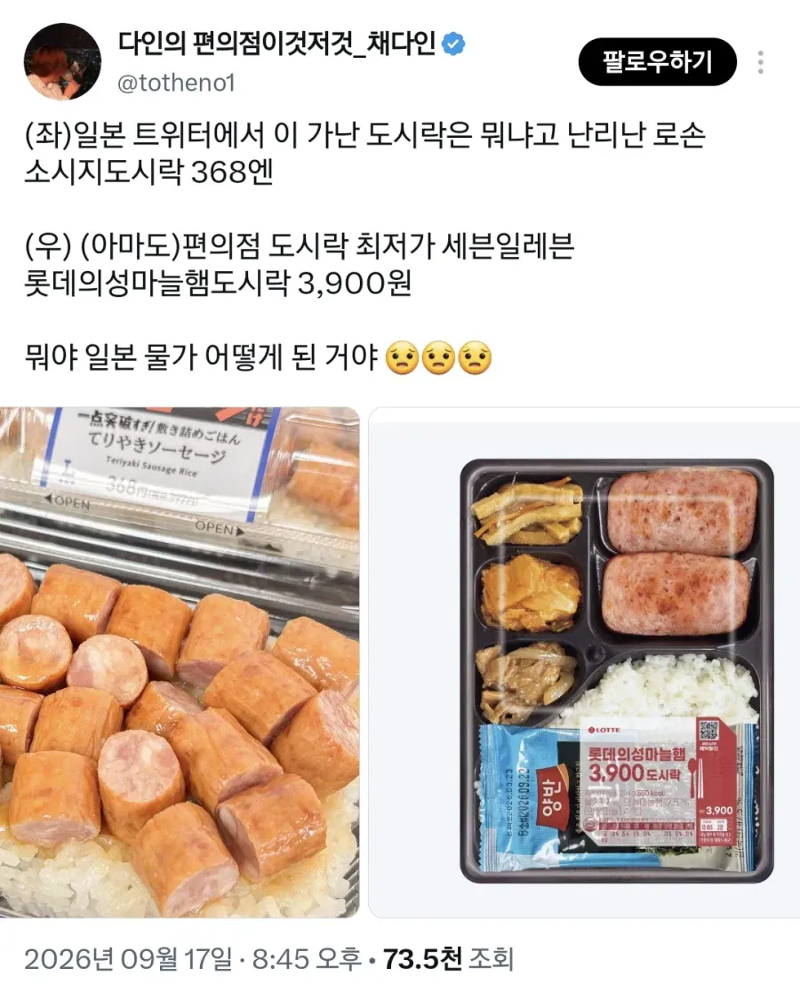

나라 망했냐며 ㅈㄴ 욕함







나라 망했냐며 ㅈㄴ 욕함
6첩 도시락 7~8천원함
존나싼 핫바지 도시락도
6천원넘음
본문에 3900원 도시락 나왔잖어
4000원이면 일단 김밥이라도 먹을 수 있음
? 그렇게 올랐어? 나 한창 도시락 까먹을땐 5천에서 6천에 석천이형 도시락이나 혜자도시락 양 많은거 골라먹을수있었는데
4~5천원대 도시락 많음
내가 사는 곳은 한국이 아닌가...?
엥 방금 혜자 도시락 유부초밥 알존나큰거 6개있는거 5천원에 샀는데
나 이거 3개먹으면 배불러서 다못먹어
도시락은 혜자로운만 먹음 6600원인데 별의 별 고기반찬에 계란, 조미김까지 들어있음
지구7정도의 한국인가봐..
데리야끼소시지 거의 400엔인데... 교무슈퍼나 라이프 가면 저돈으로 제대로된 도시락 사먹을수 있는데...
ㄹㅇ.. 라이프가서 샤케벤이나 아지후라이벤또 사먹는게 훨 날듯..
뭐지 왜 삼김으로 안했을까???

라면 하나랑 때리면 탄수폭탄 든든하게 맞고 혈당스파이크로 행복할수 있을거같아
사료의 브랜드화
가격이 싸면 진짜 궁할 때 가끔 먹는 용도로 살만해보이는데 별로 싸지도 않네
일본 편의점 차원이 달라!
도시락의 우메보시 주먹밥화까지 앞으로 한걸음ㄷㄷ
예전에는 감방에서 영치금으로 반찬 구매하지 않으면 밥을 못 먹을 정도로 열악했는데,
요즘은 따로 반찬을 구매하지 않을 정도로 잘 나옴.
교도소 식단표 검색해 보면 이렇게까지 먹여야 하나 할 정도로 잘 나옴.
저돈이면 그냥 삼김에 라면 먹겠는데
전쟁났니
우리나라 도시락도 가격 많이 올라서 3900원저건 코로나 이전가격이고 지금은 5500원정도임
편도를 자주 먹는 입장에서 좀 푸짐한거 사면 57-62 정도고 의도적으로 싼거사야 50-53사이라 여기도 비싸긴함
물론 어디가서 김치찌개만 먹어도 만원돈이니까 그래도 도시락이 절대적으로 싼건 맞지
어제까지 일본 관광했는데 확실히 일본 편도 퀄리티가 급 하락한게 눈에 보이더라
그냥 마트가서 사먹는게 나음
진짜 전쟁통에 배급해주는 밥같네 ㅋㅋ
막짤은 좌가 더 낫지 않나 스팸 두 장보단
저걸로 370엔은 비싸긴 하네.. 차라리 100엔 도시락이나 부활시키지 저거에서 100-200엔 추가하면 멀쩡한 도시락 살 수 있는데 팔리기나 하려나 저거..
한국에선 저기서 2천원만 더 보태도 반찬 많은 도시락 구할수있을텐데